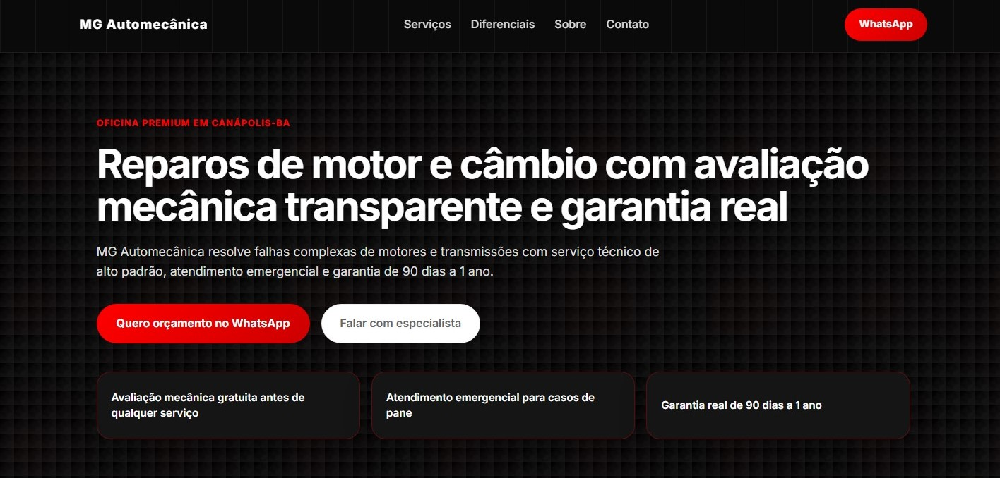

Web · Oficina mecânica
MG Automecânica
ContextoOficina local sem nenhuma presença digital própria.
ProblemaClientes dependiam só de indicação boca a boca para encontrar endereço, serviços e contato.
SoluçãoSite direto ao ponto: serviços, localização e WhatsApp a um clique.